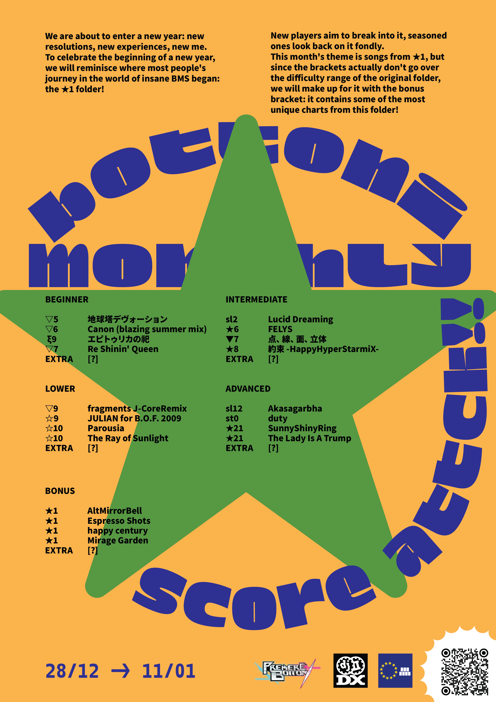

Bottoni Monthly Score Attack!
BMSA! S9: Insane Year Beginning
30/11/2025 - 14/12/2025 23:59 UTC+2
How to join the competition:
Load this page's URL into LR2oraja or BeMusicSeeker as a table
Open the tournament table folder
Start Playing the Charts!
Check the current rankings from the leaderboard pages (also accessible from the sidebar):
Join the BMS Europe Discord Server to stay updated, discuss and scorepost

Rules:
Registration
Registration and bracket selection
In order to show up on the leaderboards, simply play three of the charts of the bracket you want to join, and your scores will get added to the leaderboard.
There's a system in place to stop people from joining brackets too easy for them: if it's not working as intended, please tell one of the organizers.
The difficulty brackets are made with the following skill ranges in mind (but you aren't strictly bound to them):
- Beginner: for anyone new to the game, IIDX 6th dan and below
- Lower: for players around IIDX 7th to 10th dan, below insane 2nd dan
- Intermediate: for players around IIDX chuuden and kaiden, below insane 9th dan
- Advanced: for anyone above insane 9th dan
- Bonus: open to everyone; mostly intended for Intermediate and Advanced level players
Score submission
If you have provided your bokutachi account in the registration form and you are uploading scores correctly to the IR, your scores should automatically show up in the leaderboard pages within a couple of minutes. If you don't have a bokutachi account, please make one here
If you want to proceed with manual score submission, post your scores and raises on any discord server you have in common with me (dot_light), ping me, and i will add the scores manually to the spreadsheet as soon as possible.
Game client and options
Any client supported by bokutachi can be used: that includes Lunatic Rave 2, LR2oraja, and Endless Dream.
MIRROR, RANDOM (random trainer included), R-RANDOM and S-RANDOM are allowed.
NOTE: LR2 scores don't have a timestamp, which means that LR2 scores manually uploaded to tachi will not get picked up because of the date filter.
Ranking
Ranking is decided based on a rating that comes from a formula which takes in account the amount of players participating and emphasizes the player ranking in the individual charts and the total score. You can find the formula for Rating in the leaderboard pages.
Starting from S7, your BP on every chart will also be assigned a Rating according to how well you did relative to the other players.
FAQ
Q. Why these charts??
A. All the charts chosen follow a theme that changes every month.
Q. Where do I get the charts?
A. You can find the dl on the ranking page for the current season. (Check to burger menu on the top left!)
Q. Is there a way to find the charts quicker?
A. This page's url is a table! You can put it in your client to find the current tournament charts quickly. If for some reason you're looking for older tournaments charts, check the archive section on the hamburger menu on the top left.
Q. I feel like there is something wrong with the calculation who do I tell?
A. Spam DM me on discord.
Q. Miss count when?
A. NOW!
Q. What's a "bottoni" anyway?
A. Premere Bottoni, usually shortened to just Bottoni, is the main BEMANI community in Italy. Earlier seasons of the BMSA! where hosted on Bottoni, in collaboration with the BMS Europe discord, and thus partecipation was limited to european players.
Starting from Season 6, we decided to allow players from all over the world to increase player count, to make the ranking more varied, and in general to allow more people to have fun and compete!